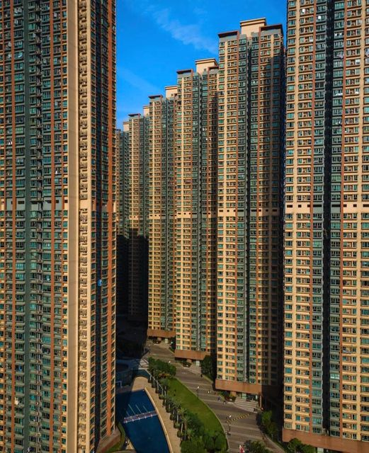

Mailutveksling etter valget i Sverige september 2022

Hei Ja, trist at det går denne veien i Sverige. Klimaproblemene merkes nok ikke nok direkte i våre land ennå. Akutte problemer får hele oppmerksomheten. Jeg oppfatter det slik at (mesteparten av) SD’s framgang skyldes den frykten som gjengkriminaliteten skaper. De andre partiene har vel ikke troverdige svar på dette problemet. For meg er dette en del av en større dynamikk: Liberalisme bereder grunnen for Fascisme. Liberalisme er jo (for sterk) betoning av individuell frihet. Akkumulert over tid skaper dette økende ulikheter og tilslutt et splittet samfunn. Som det gamle ordtaket sier: ‘It takes a village to raise a child’. ‘Village’ er social kontroll i positiv forstand. Gjengkriminaliteten er jo et storby/forstads-problem. Ennå verre enn i Sverige er det i det franske ‘banlieu’. Etterkrigstidens urbanisering med store høyblokkområder umuligjør ‘village’. Social kontroll i slike områder må organiseres (slik partiet gjør i Kina) og blir en form for overvåkning som den liberale ideologien ikke aksepterer. Det eneste vi kan si idag er vel at vi ikke skulle ha bygget etterkrigstiden slik vi gjorde: industriell storskala boligbygging er en misforståelse av hva samfunnsbygging går ut på. Når dere nå reiser til Rügen må dere ta opp denne tråden med de lokale som ennå husker DDR - på godt og vondt! Dilemmaet med en samfunnsorganisert social kontroll spilles godt ut i TV-serien ‘Weissensee’ (https://en.wikipedia.org/wiki/Weissensee_(TV_series)). Min gamle professor i Trondheim var i sin tid på en studietur til DDR. Han kom hjem og sammenfattet inntrykket slik: ‘De bryr seg med deg, men de bryr seg om deg også’. Etterhvert ble det jo for mye av det første i DDR. Liberalismens problem er vel at den ikke skal bry seg med deg, men ender opp med å la være å bry seg om deg. Socialdemokratiet ga folket en leilighet i en høyblokk, men ingen ‘village for raising the children’ - dermed spilte de ballen over til SD. Jeg er spent på å høre hvordan dere opplever Rügen - God Reise
On Tue, Sep 13, 2022 at 11:20:07PM +0200, wrote: Hela vänkretsen är i chock över valresultatet. Över moderaternas brist på integritet. Och över det ringa intresset för klimatkrisen. Imorron åker I och jag mot Rügen och de nordtyska hansastäderns plus natur. Hoppas det är bra med dig!